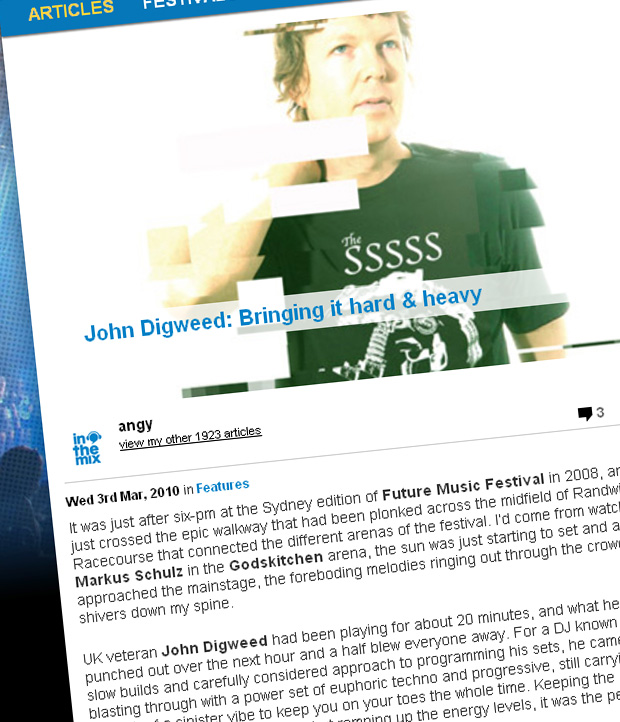

John Digweed: Bringing it hard & heavy
{kind=link}

It was just after six-pm at the Sydney edition of Future Music Festival in 2008, and I’d just crossed the epic walkway that had been plonked across the midfield of Randwick Racecourse that connected the different arenas of the festival. I’d come from watchingMarkus Schulz in the Godskitchen arena, the sun was just starting to set and as I approached the mainstage, the foreboding melodies ringing out through the crowd sent shivers down my spine.
UK veteran John Digweed had been playing for about 20 minutes, and what he punched out over the next hour and a half blew everyone away. For a DJ known for his slow builds and carefully considered approach to programming his sets, he came blasting through with a power set of euphoric techno and progressive, still carrying enough of a sinister vibe to keep you on your toes the whole time. Keeping the trademark Digweed sound intact but ramping up the energy levels, it was the perfect festival set.
“I remember being thankful I wasn’t playing earlier,” Digweed says of that memorable gig. “ Sven Vath, Roger Sanchez and I had all been rotating our play times throughout the tour and I’d come to learn the early slots in mid-afternoon weren’t received as well due to the baking sun and intense heat. Because the Sydney crowd was so good I would have been gutted not to have had the best of them, but fortunately, like the sunset, everything seemed to come together perfectly. Thanks again to all who attended and made it so special.”
When ITM spoke with Digweed in early February, he was in the middle of preparing for his returning tour with Future Music Festival. “I took January off to work in the studio, on some remixes and some original material, and the record label too which has been doing really great. Last year was probably our best in quite some time, so we’ve just been focusing on getting the release schedule finalised. So it’s been quite nice not having to travel or go anywhere.”
His record label Bedrock did indeed have a massive 2009, which had a lot to do with success of artists like Guy J, and the ‘melodic techno’ sound the Israeli producer found himself at the forefront of. It’d been the catalyst for the return of a touch of warmth to underground dance, and it was a sound Bedrock itself also came to be associated with.
“Over the years, it’s always been a good platform for new artists coming through to be able to showcase their sound,” he says. “Guy J is definitely one of those artists who over the past couple of years, every original track and remix has just seemed to get better and better. Some artists burn very brightly to start with, and don’t seem to have the follow-up of ideas and tracks that warranted the initial buzz, but Guy definitely seems to be one of those producers who is gonna be here for a long time. He’s generated a lot of interest in what he’s doing in the studio, and it’s great to be part of that.”
The 2010 edition of Future Music Festival kicked off over the weekend in Brisbane and Perth, and for anyone who caught his powerhouse sets at The Likes of You stage, they’ll know how much he’s able to kick the tempo into gear when need be. While a lot of people might see him as a club DJ who works best when building his set over five-hour sets or more, he’s got the chops to re-engineer his sound to work on the big stages.
“It’s definitely one of those gigs you have to prep up for, and everyone is going out there for that hour and a half or so that you’re playing, and you can’t really play a club set. You’ve gotta go for the jugular straight off the bat.”
Digweed’s longtime musical partner Sasha was recently in the country to perform in the cavernous surrounds of the Boiler Room at the Big Day Out, a room that in some cities can accommodate as many as 30,000 people, and he brought along with him a custom designed audio/visual show to help him face the challenge of playing to a festival crowd.
It’s something Sasha has been very open in admitting that he’s struggled with over the years. “I’m not the DJ who plays the big anthem tunes. I’m much more comfortable in a club set where I’ve got 5 hours where I can settle into a groove. When you’ve only got an hour and a half, I’ve struggled to present myself like that,” he told ITM last year.
However, it appears Digweed has found it a little easier to craft his sound into something that works well in front of tens of thousands of people. In that respect, there’s almost a sense of novelty in seeing him playing a festival.
“I think that’s the thing, it shows that I can play to different audiences and deliver the goods,” he says. “You’ve just got to make sure you’re delivering that, and maximise your approach with that in mind. You can’t go for the build. Every other DJ who’s on the festival lineup, they’re not trying to build anything either, they’ve only got an hour and fifteen to do what they’re gonna do. Some of the DJs will be playing bigger records than I’ll ever have in my box, but you’ve just got to take that into account. I’ve been doing this for a long time, so you’ve just got to take each gig on how you approach it when you get there.”
While he stresses it’s something that should never be taken for granted, after nearly two decades of working the crowds, Digweed finding himself in a blessed position. Clubbers now flock to his performances for the experience he creates, and most of the time they’re willing to be taken on that journey. “I think I’m enjoying DJing more now than ever before, because now I’m in a position where I’ve achieved so much, at every gig I play the crowds are there, and you get a really great reaction. I just seem to revel in those kinds of shows now,” he says. “From a DJ’s point of view, especially when I’m doing a lot of the club shows, I can go in and practically play all new music all night, and they’re into it.”
That brings us to another of Digweed’s defining characteristics as a DJ – his love of exposing his listeners to new, cutting-edge music. “That’s what got me into DJing,” he says. “When you hear something that really excites you in the record shop and you just wanna rush out and play it. That’s where I get the big buzz, from being able to play all the new stuff that hasn’t been heard and to get a reaction as if they’ve heard it twenty times before. I think that also comes down to your ears. If you’ve got a good set of ears then you can pick or choose those unique records, and that’s the key to being a really good DJ. I think that’s what I’ve gained over the years.”
Last Saturday I braved the muddy trenches of Brisbane’s Doomben Racecourse to catch the first leg of the Future Music Festival, and when John Digweed took over fromWay Out West in The Likes of You tent, he again came out firing with a set of driving, tech-infused progressive that hit the energy levels at exactly the right point.
Packing more power and melody than I even expected, his set made the thousands gathered forget about the rain that had pelted the racecourse all day, and the muddy swamp that had basically split the dancefloor down the middle; throwing their hands in the air and letting out football arena-style roars as he bashed through the momentous build-ups. It was a reminder that even though his natural domain might be in the clubs, Digweed can still smash it out hard and heavy when it’s called for.
Check out ITM’s Festival Page for more Future Music Festival info, and catch John Digweed at the dates below:
Sat 6 March – Sydney FMF
Sun 7 March – Melbourne FMF
Sund 7 March – Official FMF afterparty, Yellow @ Neverland, Melbourne
Mon 8 March – Adelaide FMF